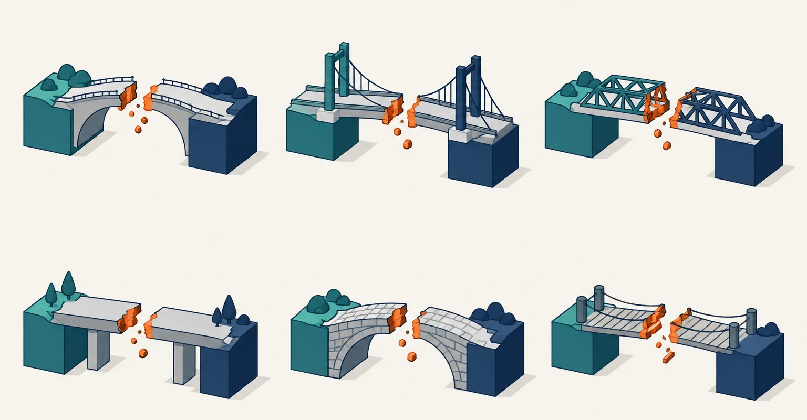
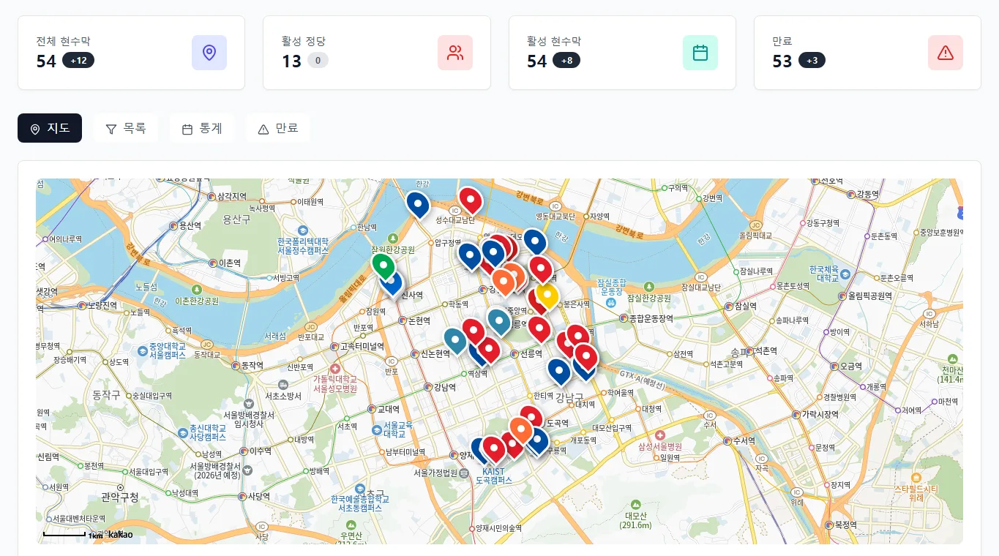
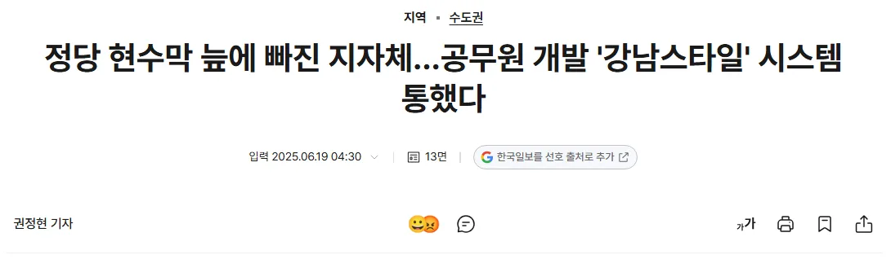
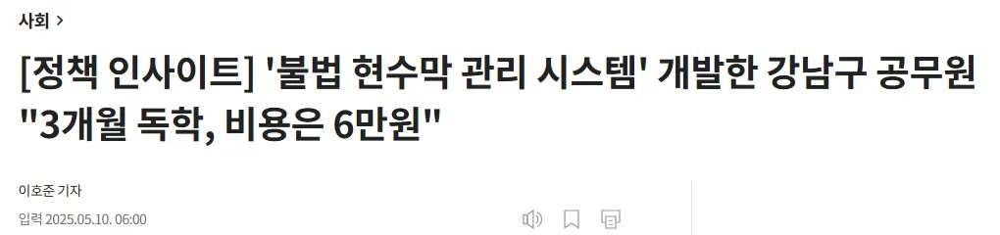
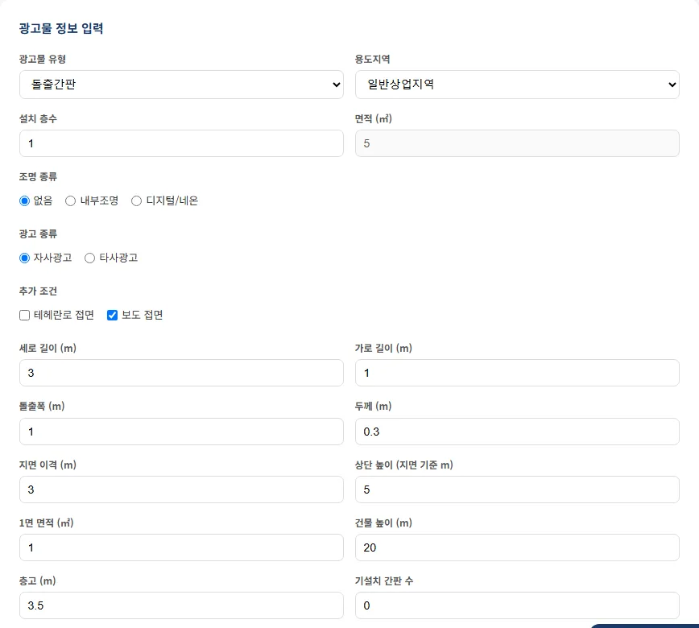
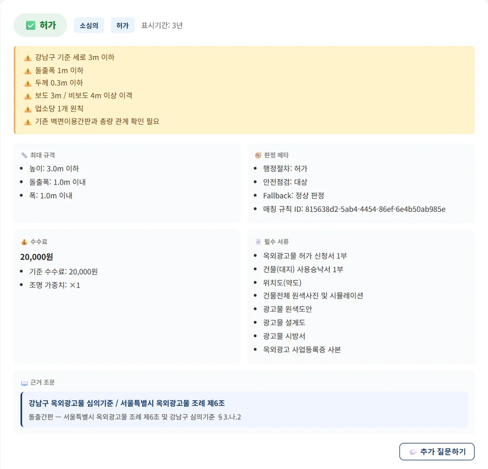
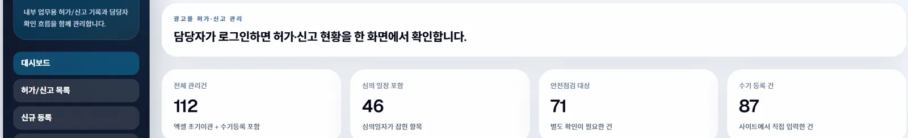
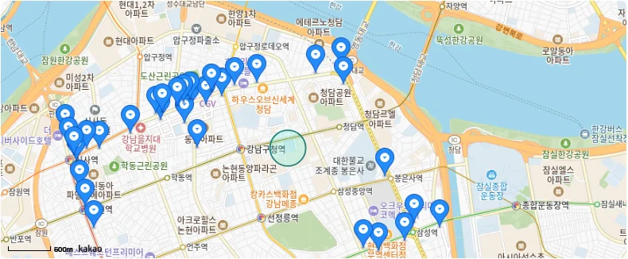
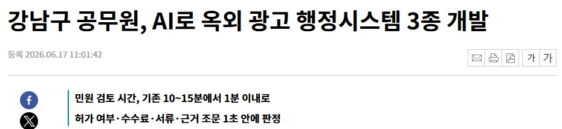
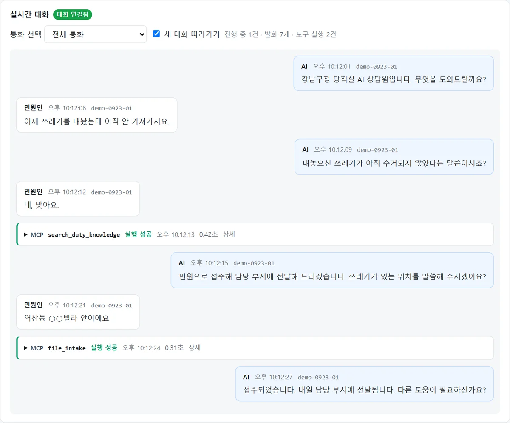

수기·엑셀·한글파일과 담당자의 기억에 의존하던 행정을
지도·DB·자동판정·지식관리·자동수합 체계로 전환했습니다.
서울특별시 강남구 도시계획과 강진규


월평균 1~3월 → 4~6월 · '기타' 유형은 6.7건 → 12.7건 증가




돌출간판 · 일반상업지역 · 1층 · 보도 접면
허가 · 소심의 대상
기준 수수료 자동 계산, 필수 서류 목록 제시
서울특별시 옥외광고물 조례 제6조 · 강남구 심의기준

| 집계 기준 | 전체·관리 중 | 심의 일정 포함 | 안전점검 대상 | 수기 등록 |
|---|---|---|---|---|
| 보도자료 기준 | 148건 | 70건 | 95건 | 자료 없음 |
| 적극행정 신청서 기준 | 112건 | 46건 | 71건 | 87건 |

담당자가 법령집·조례·심의기준을 매번 대조, 담당자별 안내 편차 가능
같은 조건이면 같은 결과, 근거 조문을 함께 확인

2~3년 주기의 순환보직으로 담당자가 쌓은 법령 해석 경험과 민원 대응 암묵지가 조직에 남지 않습니다.
그래서 챗봇이 아니라, 사람이 검증한 지식만 남기는 파이프라인을 만들었습니다.
간판 규격 89건 · 수수료 51건 · 전광류·조명 44건 · 정보공개 42건 등 (한 질의가 여러 유형에 속할 수 있음)
심의도서에 직접조명 시방서가 포함되어 있었으나 확인하지 못하고 검토의견을 '적정'으로 처리
시방서와 조명 조건까지 함께 확인했어야 함. 검토의견은 자료 전체를 기준으로 판단
도면만이 아니라 시방서·조명 방식·부속 조건까지 봐야 하는 유형. 직접조명 여부는 놓치기 쉬움
도면과 시방서를 함께 확인 · 조명 방식은 별도 체크 항목 · '적정' 전 직접/간접조명 확인
팀별 한글파일 작성 → 파일 제출 → 수합 담당자 붙여넣기 → 순서·양식 수정 → 최종 파일 공유
제출 여부 실시간 확인 곤란 · 반복 사업 매번 재작성 · 과거 보고 재활용 어려움
웹에서 항목 입력 → 자동저장·자동수합 → 제출 현황 실시간 확인 → 읽기 전용 공유 → PDF 출력
지난 회차 복사 · 제출 후 수정 · 상태 관리(작성 전 · 작성 중 · 제출 완료 · 수정 필요 · 완료)
개발은 누군가의 불편을 해소하는 일. 현장의 맥락을 모르면 기능이 좋아도 외면받습니다.
현수막이 실제로 어떻게 설치·정비되고, 법규와 민원이 어떻게 처리되는지 아는 것이 출발점이었습니다.
AI에게 모르는 부분을 묻고, 구현하고, 오류를 고치며 역량을 쌓았습니다.
| 정당현수막 | 3개월 독학, 비용 6만원 (조선비즈) |
| 옥외광고 3종 | 개발예산 0원, 약 35일 |
| 공통 | 외부 용역 없이 자체 구축 |
정당현수막 관리시스템 도입 문의 7개 기관
성북구 · 파주시 · 경남도청 · 세종시 · 동작구 · 김포시 · 대전 동구청
GitHub 공개 저장소로 구조를 확인할 수 있습니다.
kangjinkui/banner_gangnam
kangjinkui/signcheck
kangjinkui/Ad-permit-manager
kangjinkui/biweekly-report-board
수합판 → 주간보고 · 간부회의 자료 · 부서별 실적 취합 등 정기 보고자료 수합
판돌이 wiki → 사람이 검증한 법령·사례 데이터를 기관 내부 로컬·온프레미스 LLM에서 활용할 기반
야간·휴일 당직 전화를 모두 당직자가 직접 응대, 통화 내용은 사후 당직일지로만 확인
AI가 먼저 받아 긴급·당직자 연결·민원 접수·단순 안내로 나누고 알맞은 곳으로 연결
| 유형 | 처리 |
|---|---|
| R1 긴급 | 119·112 안내 + 당직자 즉시 연결 (항상 최우선) |
| R2 연결 | 민원인이 원하면 당직자 내선으로 연결 |
| R3 접수 | 위치·연락처 접수 → 다음 날 담당처 전달 |
| R4 안내 | 사람이 승인한 매뉴얼 문구만 그대로 안내 |
당직일지 2,370건과 실통화 253건을 분석해 가장 잦은 민원부터 집중
쓰레기·소음·주정차·가로등·도로파임·동물 사체·사고 잔해물을 AI 응대 → 접수 → 담당처 문자 전달 흐름으로 구현
자연스러운 대화보다 분류가 우선. 긴급이 조금이라도 의심되면 항상 상위로 올리고 119·112 안내를 최우선
매뉴얼과 맞지 않으면 답하지 않고 접수로 넘김. 매뉴얼 문구를 원본과 대조해 뜻이 틀린 22건 수정, 검증 안 된 문구는 송출 차단
당직앱에서 AI 응대를 실시간으로 듣고 '넘겨받기'로 즉시 인수. 민원인이 원하면 당직자에게 연결
판돌이 wiki와 같은 원칙입니다 — 사람이 검증한 내용만 AI가 말하게 합니다.

기술을 먼저 놓고 문제를 찾은 것이 아니라,
현장의 불편을 해결하기 위해 기술을 배웠습니다.
위치 데이터로 정비 대상을 먼저 찾는 현장 행정
사람이 검증한 판단만 매뉴얼로 남기는 구조
작성·수합·보고가 한 흐름으로 이어지는 내부 업무
행정을 잇는 공공개발 — 서울특별시 강남구 도시계획과 강진규
정당현수막 관리 — https://hbc.ai.kr/
AdJudge 광고판정 — https://signcheck.vercel.app/
허가·신고 관리 DB — https://ad-permit-manager.vercel.app/
격주 업무보고 수합판 — https://biweekly-report-board.vercel.app
GitHub — https://github.com/kangjinkui
AdJudge 설계 대비 구현 갭분석 — signcheck/docs/03-analysis/db.analysis.md
광고물 13종 정의 — signcheck/docs/01-plan/features/광고판정.plan.md
AI 당직 통화시스템 개발 추진 결과 보고(2026. 9. 30.) · 비공개 저장소 ai-dangjik
통화 계층: 오픈소스 AVA(AI Voice Agent for Asterisk)
한국일보(2025.06.19) 「정당 현수막 늪에 빠진 지자체…공무원 개발 '강남스타일' 시스템 통했다」
조선비즈(2025.05.10) 「[정책 인사이트] '불법 현수막 관리 시스템' 개발한 강남구 공무원 "3개월 독학, 비용은 6만원"」
뉴시스(2025.06.10) 「강남구 AI 공모전 최우수상에 '정당 현수막 관리 시스템'」
뉴시스(2026.06.17) 「강남구 공무원, AI로 옥외 광고 행정시스템 3종 개발」
모든 수치는 달인 신청서·증빙자료·언론 보도에서 확인된 값만 사용 · 집계 시점이 다른 수치는 기준을 구분 표기 · 근거가 없는 절감률은 표기하지 않음